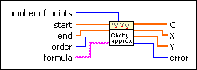
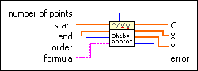
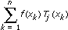
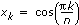

Chebyshev Approximation VI
Owning Palette: Optimization VIs
Requires: Full Development System
Determines a given function using Chebyshev polynomials.

 Add to the block diagram Add to the block diagram |
 Find on the palette Find on the palette |
Owning Palette: Optimization VIs
Requires: Full Development System
Determines a given function using Chebyshev polynomials.

| Add to the block diagram |
Find on the palette |
 |
number of points is the number of equidistant points in the interval (start,end). The default is 10. |
 |
start is the start point of the interval. The default is 0.0. |
|
end is the end point of the interval. The default is 1.0. |
|
order is the degree of the Chebyshev approximation. The default is 3. The degree is the number of different Chebyshev polynomials T0(x), T1(x), …, Tn(x) describing the formula. |
 |
formula is a string describing the function under investigation. The formula can contain any number of valid variables. |
 |
C is an array of coefficients. The array of coefficients belongs to T0(x), T1(x), …, Tn(x). |
|
X is the x values dividing (start,end) in equidistant subintervals. |
|
Y is the y values of the Chebyshev polynomial at points X. |
 |
error returns any error or warning from the VI. You can wire error to the Error Cluster From Error Code VI to convert the error code or warning into an error cluster. |
For a given natural number n, the following equation approximately represents the function f(x).
f(x) = c0T0(x) + … + cnTn(x)
where T0(x), …, Tn(x) are the first Chebyshev polynomials. You can calculate the c0, …, cn as sums of the form

where  for k = 1, ..., n.
Refer to the Sequence of Chebyshev Approximations VI in the labview\examples\Mathematics\Optimization directory for an example of using the Chebyshev Approximation VI.
 Open example Find related examples
Open example Find related examples